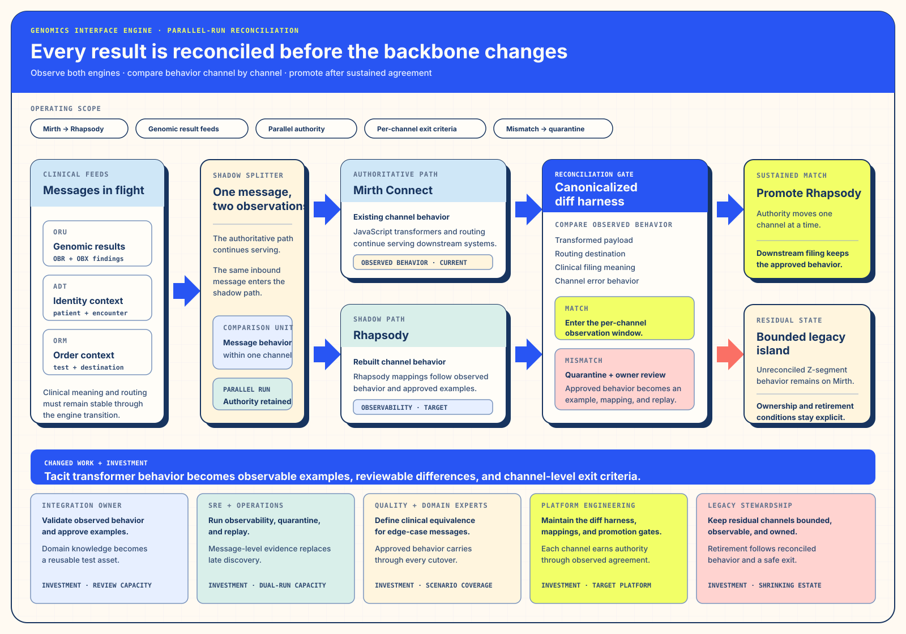

Track ISolution Architecture · Purpose and Changed WorkRecover what the existing system and its operators actually do.
I. Solution Architecture — Make behavior legible and portable
§a Debrief — The Engine Worked Because People Completed It
The starting platform carried mission-critical laboratory and clinical messages. Its channels, JavaScript transformers, operational workarounds, and exception habits had accumulated around real receiving systems. The engine worked, while the organization’s independent description of channel behavior remained incomplete.
The migration object was therefore larger than software. It included message identity, transformation meaning, route decisions, recovery actions, monitoring, downstream expectations, and the tacit judgments used when a channel behaved differently from its documentation.
§b Bottleneck — Opaque Behavior Under a Zero-Drop Constraint
§c Intervention — Parallel Run with Canonical Reconciliation
A shadow splitter sends the same message to the authoritative Mirth channel and the candidate Rhapsody channel. Both outputs enter a canonical comparison that ignores transport noise while retaining clinical meaning, identity, status, and routing differences. A match contributes to a convergence window. A divergence enters quarantine with the original message, both outputs, and a named human review route.


§d Outcome — Safer Backbone, Bounded Residual Estate
Most channels reach a stable match window and move to the supported, observable target. The comparison also reveals edge behavior that the earlier system had handled silently or inconsistently. Some low-volume legacy channels remain unresolved. They stay on Mirth with a named owner, visible traffic, and a shrinking scope rather than being forced through an unsafe date.
§e Repeatability — Extract Tacit Knowledge as Tests
Rebuild from observed behavior and representative examples. Keep clinical message identity stable across both paths. Reconcile before promotion, quarantine differences with their full context, and make bounded legacy ownership explicit. The expert who understands the old platform becomes a designer of the new contract.